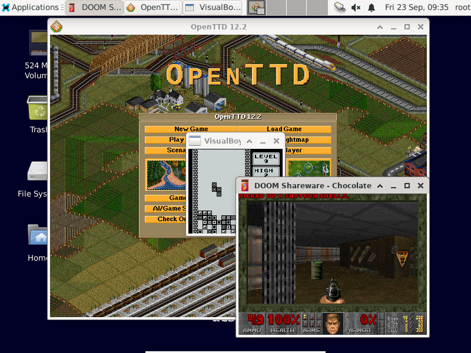

Hardware¶
Litex¶
NaxRiscv is ported on Litex :
Digilent nexys video¶
Once Litex is installed, you can generate and load the Digilent nexys video bitstream via for instance :
# RV64IMAFDCSU config, enough to run linux
python3 -m litex_boards.targets.digilent_nexys_video --cpu-type=naxriscv --bus-standard axi-lite --with-video-framebuffer --with-spi-sdcard --with-ethernet --xlen=64 --scala-args='rvc=true,rvf=true,rvd=true' --build --load
Putting debian on the SDCARD¶
export SDCARD=/dev/???
(
echo o
echo n
echo p
echo 1
echo
echo +500M
echo y
echo n
echo p
echo 2
echo
echo +7G
echo y
echo t
echo 1
echo b
echo p
echo w
) | sudo fdisk $SDCARD
sudo mkdosfs ${SDCARD}1
sudo mkfs -t ext2 ${SDCARD}2
You need now to download part1 and part2 from https://drive.google.com/drive/folders/1OWY_NtJYWXd3oT8A3Zujef4eJwZFP_Yh?usp=sharing and extract them to ${SDCARD}1 and ${SDCARD}2
# Download images from https://drive.google.com/drive/folders/1OWY_NtJYWXd3oT8A3Zujef4eJwZFP_Yh?usp=sharing
mkdir mnt
sudo mount ${SDCARD}1 mnt
sudo tar -xf part1.tar.gz -C mnt
sudo umount mnt
sudo mount ${SDCARD}2 mnt
sudo tar -xf part2.tar.gz -C mnt
sudo umount mnt
Note that the DTB was generated for the digilent nexys video with : python3 -m litex_boards.targets.digilent_nexys_video –cpu-type=naxriscv –with-video-framebuffer –with-spi-sdcard –with-ethernet –xlen=64 –scala-args=’rvc=true,rvf=true,rvd=true’ –build –load
Then all should be good. You can login with user “root” password “root”. You can also connect via SSH to root.
The bottleneck of the system is by far accessing the spi-sdcard. (500 KB/s read speed), so, things take time the first time you run them. Then it is much faster (linux cached stuff). So, instead of –with-spi-sdcard, consider using –with-coherent-dma –with-sdcard with the driver patch described in https://github.com/SpinalHDL/NaxSoftware/tree/main/debian_litex, this will allow the SoC to reach 4MB/s on the sdcard.
The Debian chroot (part2) was generated by following https://wiki.debian.org/RISC-V#Creating_a_riscv64_chroot and https://github.com/tongchen126/Boot-Debian-On-Litex-Rocket/blob/main/README.md#step3-build-debian-rootfs. Also, it was generated inside QEMU, using https://github.com/esmil/riscv-linux “make sid”
You can also find the dts and linux .config on the google drive link. The .config came mostly from https://github.com/esmil/riscv-linux#kernel with a few additions, especialy, adding the litex drivers. The kernel was https://github.com/litex-hub/linux commit 53b46d10f9a438a29c061cac05fb250568d1d21b.
Adding packages, like xfce-desktop, chocolate-doom, openttd, visualboyadvance you can get things as following :
Generating everything from scratch¶
You can find some documentation about how to generate :
Debian rootfs
Linux kernel
OpenSBI
here : https://github.com/SpinalHDL/NaxSoftware/tree/main/debian_litex
It also contains some tips / tricks for the none Debian / Linux experts.